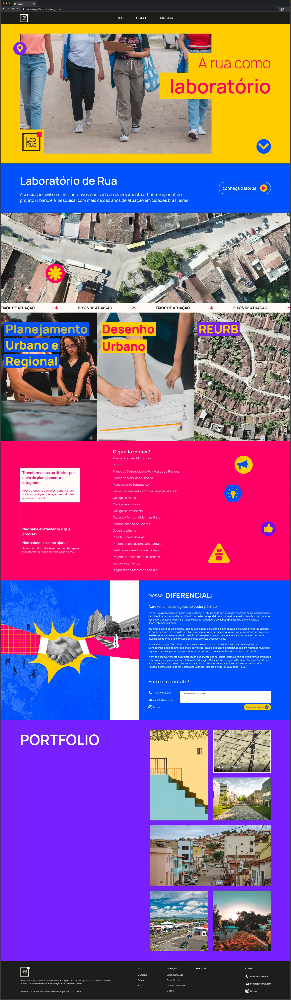
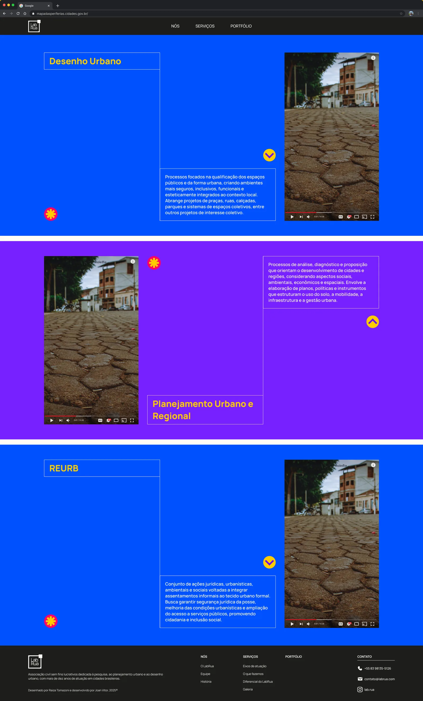
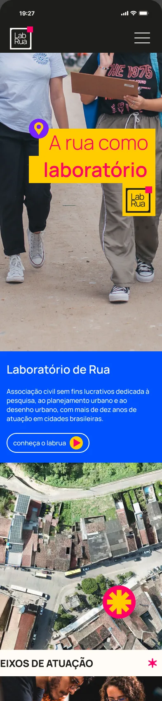

Voltar para projetos
Site do LabRua
Site institucional para uma associação sem fins lucrativos dedicada ao planejamento urbano e regional, ao desenho urbano e à pesquisa, com mais de dez anos de atuação em cidades brasileiras.

Contexto
O LabRua trabalha com planejamento urbano, desenho urbano e regularização fundiária (REURB). O site precisava apresentar uma lista grande de serviços técnicos para prefeituras e comunidades sem perder a energia da marca.
Esse é um projeto próximo da minha formação em Arquitetura e Urbanismo, o que ajudou a organizar os serviços pela forma como os clientes pensam neles.
Decisões
- A paleta como estrutura: amarelo, azul, rosa e roxo da identidade marcam cada seção, o que deixa claro onde uma termina e a outra começa.
- Três eixos de atuação: os serviços foram agrupados em Planejamento Urbano e Regional, Desenho Urbano e REURB, cada um com foto e descrição curta.
- Fotos reais das cidades: vistas aéreas e trabalho de campo mostram o que o laboratório faz, sem precisar de ilustração.
- Contato visível: formulário e canais de contato aparecem junto ao bloco de diferenciais, antes do rodapé.


